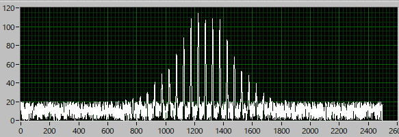
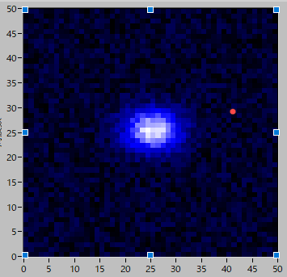
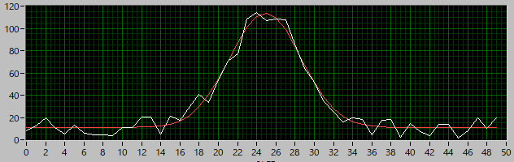

2次元ガウシアン画像のフィッティング方法-04
二次元 → 一次元方式におけるピーク値の求め方
二次元ガウシアンフィッティング方法についていろいろと調べていると，ここ，に実際のプログラムがアップされていました．
しかも回転している画像もきちんと角度まで推定できています．
プログラムの中身を見ると，

このようなデータがあり，どうも調べてみると，元画像である，2次元情報を1次元に並べ替えているようでした．
つまり，
| 1 | 2 | 3 |
| 4 | 5 | 6 |
| 7 | 8 | 9 |
という画像を，
| 1 | 2 | 3 | 4 | 5 | 6 | 7 | 8 | 9 |
のように並べ替えているようでした．
この規則性は，
N×Nの2次元画像なら，Nごとの周期関数となる
このピークをつなげたカーブがY方向の強度分布となる
と言うことになります．（X方向にスキャンしてY方向の強度分布が得られることに注意）．
Nごとの周期となるので，周期ごとにデータを取り出し，総和が最大となるパターンを採用すればいいことになります．
例えば，Y方向の場合は，2，5，8，のように．
これを1次元ガウス関数でフィットすれば，Y方向の情報が分かります．
X方向の場合には，
| 1 | 4 | 7 | 2 | 5 | 8 | 3 | 6 | 9 |
のように並び替えて同様の計算を行えばいいことになります．
実際の様子
初期データとして，

というデータを作成しました．
| A0 | 100 |
| y0 | 25 |
| dy | 3 |
| x0 | 25 |
| dx | 4 |
| Base | 10 |
| Noise | 10 |
このデータを1次元に並び替えると，
のようになります．N=50，なので，総和が一番大きくなる配列を取り出すと，

と1次元のガウスフィットが可能となります（Yスキャン）．
結果は，
| 初期値 | フィット | |
| A0y | 100 | 93.96 |
| y0 | 25 | 25.05 |
| dy | 3 | 3.10 |
| Base_y | 10 | 10.41 |
| A0x | 100 | 102.74 |
| x0 | 25 | 24.90 |
| dx | 4 | 3.73 |
| Base_x | 10 | 11.01 |
| Noise | 10 |
となり，きちんとフィットしてくれていることが分かります．
では，これら二つのフィット方法，どちらがよいのでしょうか？
次のページで議論したいと思います．